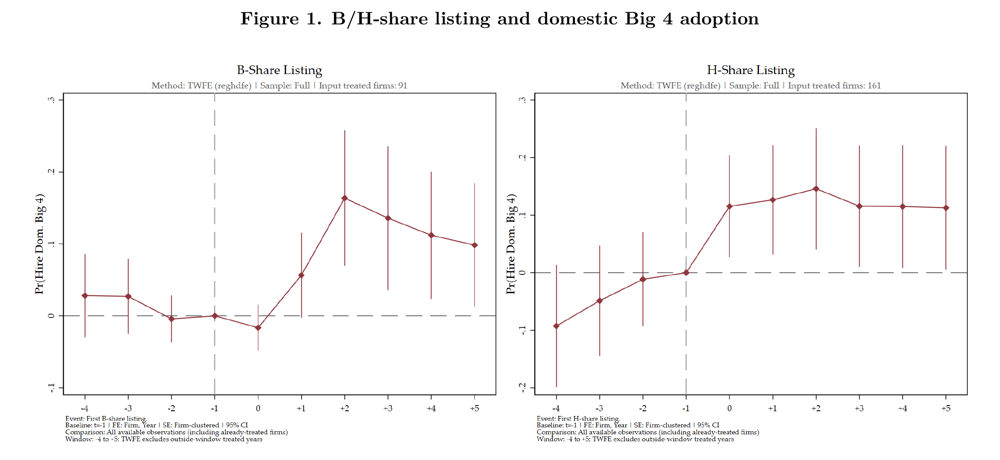
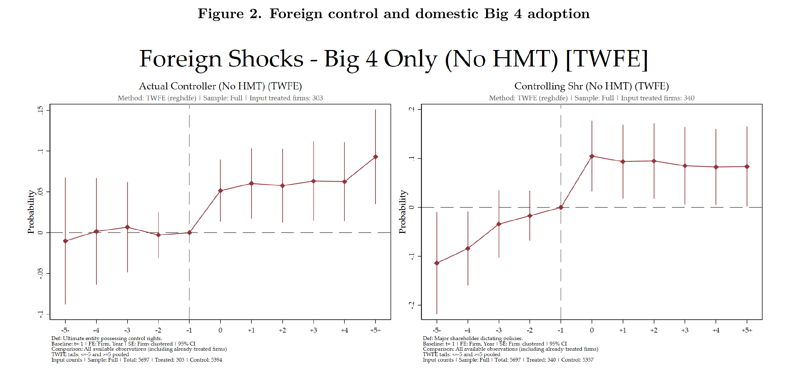
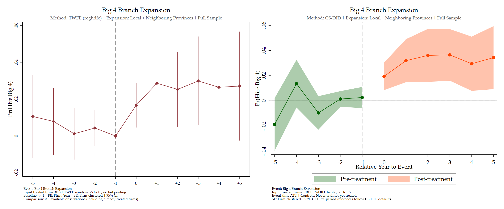
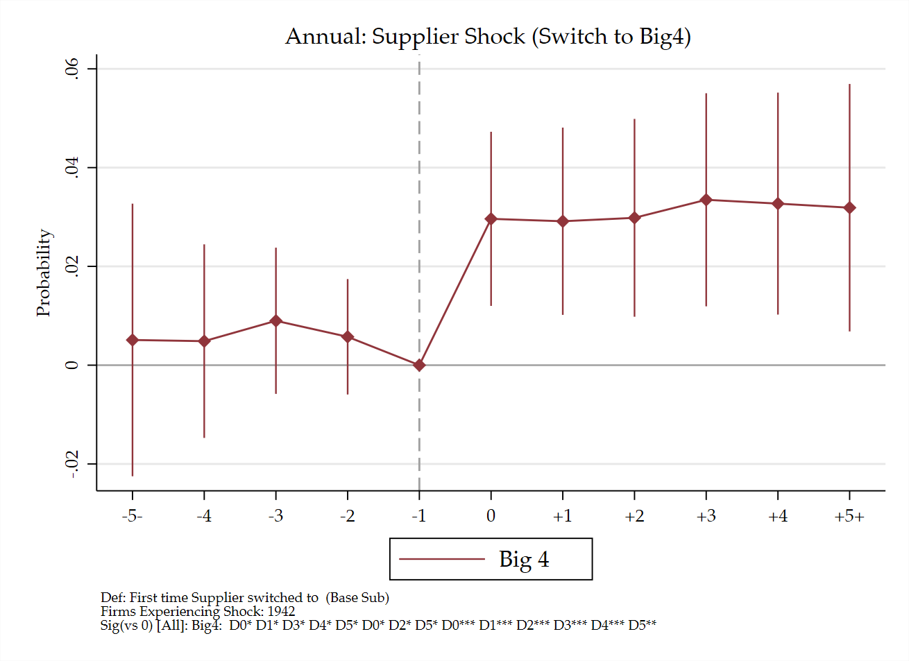

核心结果
本页围绕需求侧与供给侧推动四大采用 → 供应链中的采用扩散 → 客户选择与预警后的风险 → 财报信息的市场反应 → 审计师服务对审计结果的影响，集中展示五组结果图、一张客户选择机制表和一张 IV 回归表。需求侧包括企业通过 H/B 股上市进行跨境融资，以及外资进入并成为企业的实际控制人；供给侧是四大在本省及邻省设立分所、扩大区域服务覆盖。采用部分以 TWFE 为主展示，CS-DID 用于稳健性比较；分所图保留原图中的两种估计。
1. 需求侧：H/B 股上市与四大采用
B 股、H 股上市后，企业采用境内四大的概率上升。 B 股的上升主要出现在上市后，H 股在上市当年即出现正向变化。下图保留原合并图上排的四大采用结果，去掉下排本土八大面板。

注：公司与年份固定效应，事件前一年为基期，标准误按公司聚类，区间为 95% 置信区间。输入处理公司分别为 B 股 91 家、H 股 161 家。H 股存在部分处理前偏离，因此上市与采用之间的联系仍需结合趋势检验解释。完整结果及 CS-DID 稳健性比较。
2. 需求侧：外资控制与四大采用
首次出现外资实际控制人或控股股东后，境内四大采用呈现正向变化。 下图保留最新股东关系分类图的上排两个面板，均排除港澳台，分别对应最终控制方与控股股东的外资进入。控股股东组在事件前已呈上升趋势，因此不能把两组的正向路径直接解释为相同的因果效应。

注：从原合并图中保留上排，左为实际控制人，右为控股股东；坐标轴、区间及面板注释均保留。输入总公司数 5,697，两组处理公司数分别为 303 和 340。模型吸收公司与年份固定效应，标准误按公司聚类。此处为股东关系分类口径，不与独立控制人面板混用。完整结果及 CS-DID 稳健性比较。
3. 供给侧：四大本省及邻省分所扩张
四大分所在本省或邻省扩张后，企业采用四大的概率呈现持续正向变化。 这一口径考察区域审计服务网络的扩张，既包括企业所在省份，也包括邻省的服务覆盖。下方按截至 2012 年和全样本展示两张完整原图。


注：两图左侧为主展示 TWFE，右侧为 CS-DID 稳健性比较；输入处理公司数均为 818。文件名 pre2012 的实际样本为 year ≤ 2012，包含 2012 年。TWFE 吸收公司与年份固定效应、以事件前一年为基期，排除处理公司真实 [−5,+5] 窗口外年份；标准误按公司聚类，区间为 95% 置信区间。两种样本下，CS-DID 的事件当年至第 5 年点估计均为正、区间高于零；部分处理前估计仍有偏离。该结果体现本省及邻省的区域暴露，不能全部归为本省直接供给增加，也仍需区分分所选址与当地需求变化。本省口径及其他比较。
4. Supplier / client Big4 shock 与采用扩散
供应商或客户首次转向四大后，焦点公司也呈现更高的四大采用概率。 供应商侧的正向变化更明显；客户侧点估计较小，置信区间也更接近零。这组结果把四大采用从企业自身的国际化需求延伸到企业之间的联系。


注：左为供应商冲击，右为客户冲击；图示处理公司数分别为 1,942 和 1,532。沿用网络章节现有年度结果，该批输出仍在复核；共同经营冲击与网络选择尚需区分，当前图展示的是采用扩散模式。完整网络结果与检验。
5. 客户选择与预警后的风险
风险意见与四大客户的进入、退出密切相关；即使收到同类预警，四大客户的失败风险仍较低。 这组结果支持将客户选择和组合调整作为解释客户风险差异的线索，并与下一节财报信息的市场反应相衔接。
- 客户关系调整： 当前四大客户收到 MAO 后，次年退出四大的概率高 30.40 个百分点（p<0.001）；当前非四大客户收到 MAO 后，次年进入四大的概率低 0.249 个百分点（p=0.039）。GC 后退出的结果在 5% 水平显著，GC 后进入不显著。这里识别的是风险意见与后续流动的条件相关，不能推断由四大主动终止合作。
- 预警后的风险差距： 在已收到 MAO 或 GC 的客户中，四大相对于非四大的次年公告违规概率分别低 5.30 和 8.87 个百分点，均在 5% 水平显著。当期综合失败差异也为负，但 MAO 组仅在 10% 水平显著；次年重述差异均不显著，表中一并保留。
- 区分两种“假阳性”口径： MAO 客户中未观察到当期综合失败的比例，四大为 87.85%、非四大为 78.33%；但以未失败客户为分母的标准 Type I 错误率，四大为 2.01%、非四大为 5.74%。前者较高不等于后者较高，因此不能据此得出“四大通过更多假阳性换取更少漏报”的结论。

注：本表流动结果以百分点表示，控制公司及行业×年份固定效应、九项controls及缺失标记，公司聚类；四大组N=3,877、516公司，非四大组N=60,917、5,125公司。意见预测和分类概率采用其各自独立样本，完整结果在章节补充中保留。综合失败指按财报年度归属的重述或违规；次年公告违规按公告时点衡量，不能直接视为预警后新发生的违规。非四大合并了本土八大和其他事务所。现有风险—意见反应也未统一支持更严格的预警阈值，因此本表作为客户选择与组合调整的机制证据，不作为审计服务改善财报质量的因果证据。完整机制结果 · 表格 TeX · · 原始估计摘录。
6. Earnings surprise 与市场反应
在有 180 天内预测信息的样本中，四大和本土八大客户的正向 earnings surprise 获得更强的公告期价格反应。 连续CAR模型还给出四大−Other每10个百分点surprise的公告日斜率差0.0084075个百分点（SE=0.003718，p=0.02375）及+1差0.0112325（SE=0.005484，p=0.04056）；固定S=0.10的线性公告日水平差0.186834（p=0.006925）是另一估计对象。共同支持门槛样本及非显著结果在完整章节并列，尚未识别因果认证效应。

注：正向惊喜大于 10% 为处理组，−10% 至 10% 为对照组；结果变量为对数股价，公告前一交易日为基期。180 天指预测信息窗口；左为总体反应，右为按事务所分组的反应；该结果不等于四大身份本身的估值溢价。完整市场反应结果。
7. 候选池与 caseload IV：一、二阶段均有支持的规格
当前含目的事务所固定效应和财务控制的候选池 IV 共包含 54 组“审计师特征 × 工具 × 匹配样本”规格。本表保留第一阶段 p<0.05，且至少一个二阶段失败指标显著下降（p<0.10）的四组；各组的六个二阶段结果完整列出。
- 本科及以上 × 候选池占比工具： 第一阶段 F=13.71；继任任期内综合失败系数为 −0.256（标准误 0.105，p<0.05）。这是候选池占比 IV。
- 985/211 背景 × 候选池占比工具： 第一阶段 F=24.95；首年重述为 −0.086（0.045），任期重述为 −0.116（0.068），两项均仅在 10% 水平显著。
- 历史无任何失败 × 平均业务量工具： 第一阶段 F=5.76；首年综合失败为 −0.283（0.153），首年重述为 −0.213（0.121），两项均仅在 10% 水平显著。这组第一阶段虽显著，但 F 较低，二阶段解释需保留弱工具问题。
- 历史无违规 × 平均业务量工具： 第一阶段 F=12.87；接任首年重述系数为 −0.119（标准误 0.053，p<0.05）。这是 caseload IV。

注：四组均为 All Matches；表内保留第一阶段系数、标准误、F、p 值、partial R²、二阶段系数及标准误、样本量和聚类数。这是按显著性及预期方向筛选后的探索性展示，显著性未作筛选调整，第一阶段显著也不能验证排除限制。“历史无失败／无违规”是可观察历史记录，不等于已经准确测量个人能力。完整规格与识别讨论 · 表格 TeX · 。
H/B 图仅保留四大面板，外资图仅保留上排实际控制人和控股股东面板，surprise 图使用 core 脚本新输出的 180 天内预测样本左右合并图；供给侧两图和供应链图使用 tables/core_result/assets 中的完整原图，供应商与客户图仅在网页中并列排版。客户选择机制表和 IV 表采用 LaTeX → PDF → PNG 的展示格式。现有估计未重新运行。